Control barrier functions: theory, variants, and learning-based extensions
How safety becomes a constraint you can solve for at every control step — the theory, twelve worked simulations, a taxonomy of the variants, and how barriers are combined with reinforcement learning and data-driven control.
Everything below is reproducible. The simulation code, the figure scripts and a PyTorch reference for the learning-based sections are in a companion repository: github.com/anjalit15/control-barrier-functions.
1. Safety as set invariance
Most safety requirements in control are not statements about stability, tracking error, or optimality. They are statements about a set: the quadrotor stays inside the flight volume, the manipulator’s elbow stays out of the human’s workspace, the car keeps a time headway, the battery stays under temperature. Formally, given a closed set \(\mathcal{C} \subset \mathbb{R}^n\) of acceptable states, the system is safe if
\[x(0) \in \mathcal{C} \;\Longrightarrow\; x(t) \in \mathcal{C} \quad \forall t \geq 0,\]
a property called forward invariance. Nagumo’s theorem tells us what this costs locally: for a set described by a smooth function \(h\) as \(\mathcal{C} = \{x : h(x) \geq 0\}\), invariance requires only that on the boundary the vector field never points out of the set, \(\nabla h(x)\cdot \dot x \geq 0\) whenever \(h(x) = 0\). Nothing is asked in the interior. This is the entire geometric content of the theory, and it is worth internalising before any algebra (Figure 1, left).
A control barrier function turns that boundary condition into a constraint on the input, and then — crucially — relaxes it so that it holds everywhere rather than only on the boundary, which is what makes it usable inside an optimisation solved at every control step.
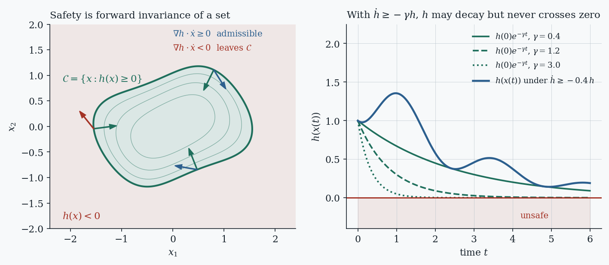
Two things about the right-hand panel are worth dwelling on, because they are the most common sources of confusion. First, the CBF condition does not say \(h\) must increase; it says \(h\) may decrease at a rate that vanishes as \(h \to 0\). Second, the guarantee is about \(h\), not about distance: a trajectory can ride the boundary of the safe set for ever, perfectly safe and entirely useless. Safety and liveness are separate properties, and CBFs address exactly one of them.
2. The mathematical core
Take a control-affine system, which covers most mechanical, vehicular and electrical plants after a change of variables:
\[\dot x = f(x) + g(x)\,u, \qquad x \in \mathbb{R}^n,\; u \in \mathcal{U} \subseteq \mathbb{R}^m,\]
with \(f, g\) locally Lipschitz. Write \(\mathcal{C} = \{x : h(x) \geq 0\}\) for a continuously differentiable \(h\) with \(0\) a regular value (i.e. \(\nabla h(x) \neq 0\) on \(\partial\mathcal{C}\), which rules out degenerate level sets).
DEFINITION — class-K
A continuous function \(\alpha : (-b, a) \to \mathbb{R}\) is an extended class-\(\mathcal{K}\) function if it is strictly increasing and \(\alpha(0) = 0\). Typical choices: \(\alpha(s) = \gamma s\), \(\gamma s^3\), or \(\gamma\,\mathrm{sgn}(s)\sqrt{|s|}\).
DEFINITION — control barrier function
\(h\) is a control barrier function for the system on \(\mathcal{C}\) if there exists an extended class-\(\mathcal{K}\) function \(\alpha\) such that
\[\sup_{u \in \mathcal{U}} \big[\underbrace{L_f h(x)}_{\nabla h\cdot f} + \underbrace{L_g h(x)}_{\nabla h\cdot g}\,u\big] \;\geq\; -\alpha\big(h(x)\big) \qquad \forall x \in \mathcal{D} \supseteq \mathcal{C}.\]
THEOREM — Ames, Xu, Grizzle & Tabuada (2017)
If \(h\) is a CBF on \(\mathcal{C}\), then any locally Lipschitz feedback \(u(x)\) taking values in
\[K_{\mathrm{cbf}}(x) = \{u \in \mathcal{U} : L_f h(x) + L_g h(x) u \geq -\alpha(h(x))\}\]
renders \(\mathcal{C}\) forward invariant. Moreover \(\mathcal{C}\) is asymptotically stable in \(\mathcal{D}\): states starting outside \(\mathcal{C}\) but inside \(\mathcal{D}\) are driven back to it.
The asymptotic-stability half of that statement is the practical reason the relaxed (so-called zeroing) formulation won out over earlier reciprocal barriers that blow up at the boundary: a real system perturbed slightly outside \(\mathcal{C}\) by noise or a discretisation artefact is pulled back rather than being handed an infinite control demand.
The safety filter
Because the condition is affine in \(u\) for fixed \(x\), enforcing it while staying close to whatever controller was already there is a quadratic program with one inequality per barrier:
\[u^\star(x) = \arg\min_{u \in \mathcal{U}} \; \|u - u_{\mathrm{nom}}(x)\|_W^2 \quad \text{s.t.} \quad L_f h(x) + L_g h(x) u \geq -\alpha(h(x)).\]
This is the CBF-QP, and it is the reason CBFs are deployed so widely: it is a tiny convex problem, solvable at kilohertz rates, and it is agnostic about where \(u_{\mathrm{nom}}\) came from — a hand-tuned PD loop, an MPC, a reinforcement-learning policy, or a vision-language-action model. The filter is minimally invasive: when the nominal input already satisfies the constraint, the filter is inactive and returns it untouched.
A dual view worth knowing: with a single constraint the QP has the closed-form solution \(u^\star = u_{\mathrm{nom}} + L_gh^\top \frac{\max(0,\,-(L_fh + L_gh\,u_{\mathrm{nom}} + \alpha(h)))}{\|L_gh\|^2}\) — a projection onto a half-space. This is what makes differentiable CBF layers cheap inside a neural policy (Section 8.4), and closed-form filters are an active topic in their own right for resource-constrained hardware.
Adding performance: the CLF-CBF-QP
If the nominal controller is itself to be synthesised, a control Lyapunov function \(V\) can be stacked into the same QP as a soft constraint with slack \(\delta\), keeping safety hard and stability negotiable:
\[\min_{u,\delta} \; \|u\|^2 + p\,\delta^2 \quad \text{s.t.} \quad L_fV + L_gV\,u \leq -\lambda V + \delta, \qquad L_fh + L_gh\,u \geq -\alpha(h).\]
The asymmetry is deliberate and is the standard engineering posture: never let a performance objective make a safety constraint infeasible.
3. The filter in action
Every figure below is the output of a simulation rather than an illustration. The code behind all of them — a small CBF toolbox, the twelve experiments, and a PyTorch reference for the learning-based sections — is in the companion repository linked at the top of this post.
Figure 2 dissects one step of the QP on a velocity-controlled robot with a circular keep-out zone, \(h(p) = \|p - c\| - r\). The right-hand middle panel is the one to study: at each instant the CBF condition cuts input space with a half-plane, the actuator limits cut it with a box, and the filter returns the point of the intersection closest to \(u_{\mathrm{nom}}\).
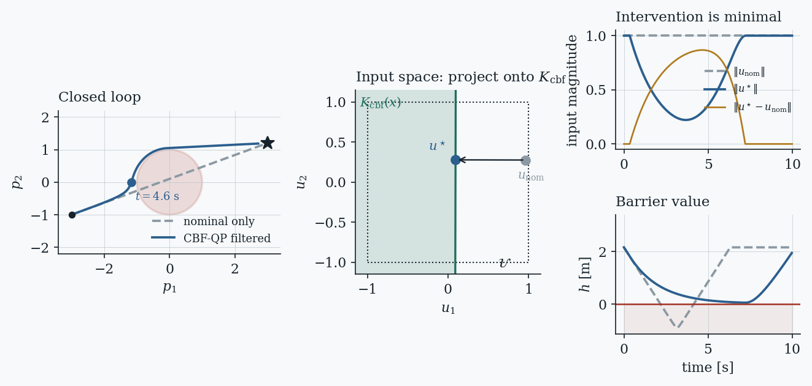
The class-\(\mathcal{K}\) function is a design decision, not a formality
Every CBF condition hides a tuning knob whose effect is larger than most practitioners expect. A small gain makes the constraint bite early and far from the boundary, producing wide, cautious detours; a large gain lets the system approach at speed and brake late, hugging \(\partial\mathcal{C}\). The same barrier and the same plant therefore give qualitatively different behaviour (Figure 3).
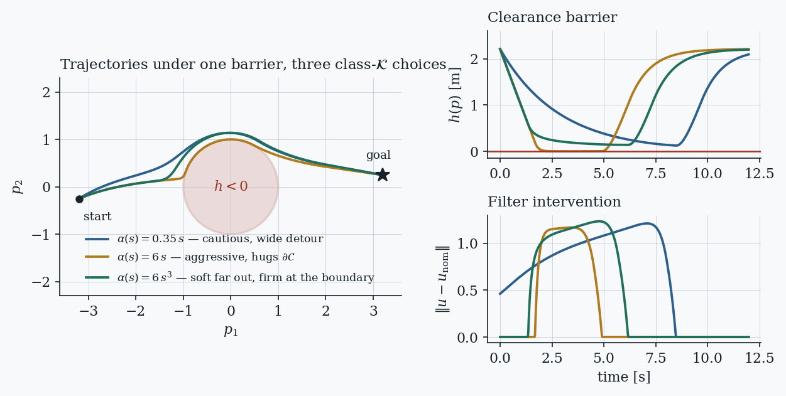
A large literature exists purely on choosing and adapting this function: adaptive CBFs make \(\alpha\) state- or time-dependent, penalty and optimal-decay formulations solve for it inside the QP, and learning-based schemes tune it from data (Sections 7.4 and 8.4). If a CBF deployment feels either paralysed or reckless, this is the first thing to inspect.
A canonical benchmark: adaptive cruise control
The example that launched much of this literature is worth reproducing because it exercises everything at once: nontrivial drift dynamics, a hard actuator bound, a performance objective in direct conflict with safety, and a barrier with clear physical meaning. With ego speed \(v\), headway \(z\) to a lead vehicle, and rolling resistance \(F_r(v) = f_0 + f_1 v + f_2 v^2\),
\[\dot v = \frac{-F_r(v) + u}{m}, \qquad \dot z = v_{\mathrm{lead}} - v, \qquad h(x) = z - \tau v, \quad \tau = 1.8\ \mathrm{s}.\]
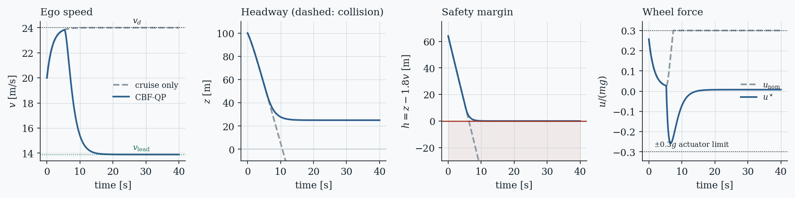
Note the shape of the filtered wheel-force trace: the filter does nothing for six seconds, saturates the actuator for about two, then hands control back. That signature — long idle, brief decisive intervention — is what a healthy safety filter looks like in logs, and its absence is diagnostic (Section 9).
4. Relative degree and high-order CBFs
The definition above quietly assumes \(L_g h(x) \neq 0\): the input must appear in \(\dot h\). It very often does not. Position constraints on a mechanical system are the standard case — for a double integrator \(\ddot p = u\) with \(h_0(p) = \|p - c\|^2 - r^2\), we get \(L_g h_0 \equiv 0\), and the CBF-QP becomes vacuous: no choice of \(u\) affects the constraint, so the filter is structurally incapable of enforcing anything. It will report feasibility right up to the collision (Figure 5, dashed).
The fix is to differentiate until the input appears, enforcing a chain of conditions. With \(\psi_0 = h_0\) and
\[\psi_i(x) = \dot\psi_{i-1}(x) + \alpha_i\big(\psi_{i-1}(x)\big), \qquad i = 1,\dots,q,\]
where \(q\) is the relative degree, the requirement \(\psi_q \geq 0\) is affine in \(u\) and the high-order CBF (HOCBF) of Xiao and Belta renders the intersection \(\bigcap_i \{\psi_i \geq 0\}\) forward invariant. The exponential CBF of Nguyen and Sreenath is the special case with linear \(\alpha_i\), where the gains are chosen by placing the poles of a linear system in \(\psi\).
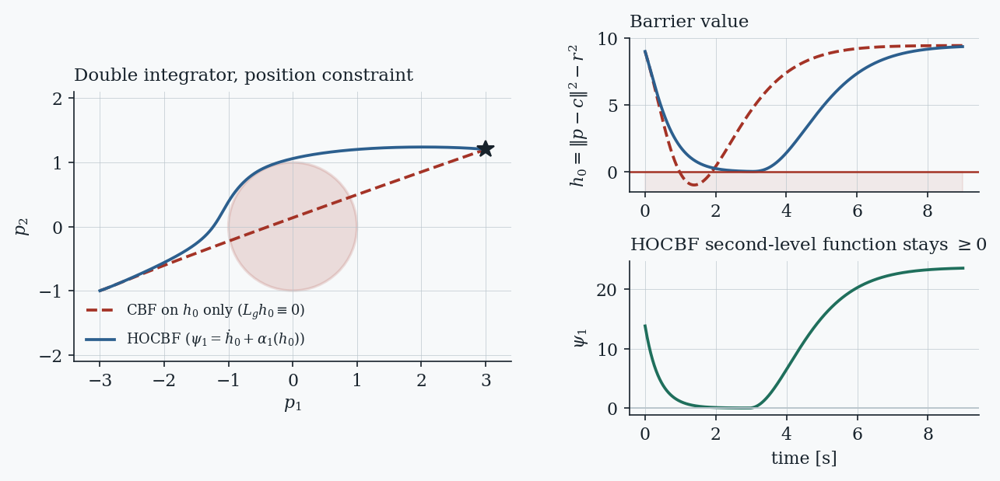
PITFALL
The HOCBF certifies invariance of the intersection of the level sets, not of \(\mathcal{C}\) alone. Initial states in \(\mathcal{C}\) with \(\psi_1 < 0\) — physically, already moving too fast toward the obstacle to stop — are outside the certified set, and no controller could save them under the input limits. Checking \(\psi_i(x_0) \geq 0\) for all \(i\) at initialisation is not optional.
5. Where the guarantee quietly fails
The CBF theorem is airtight; deployments still fail, because the theorem’s hypotheses are stronger than they look. The four failure modes below account for the large majority of practical trouble, and the recent literature is largely organised around them.
5.1 Model error and disturbances
The condition is evaluated with a model. Under \(\dot x = f(x) + g(x)u + d(t)\) with \(\|d\| \leq \delta\), the honest condition subtracts the worst case, \(L_fh + L_gh\,u - \delta\|\nabla h\| \geq -\alpha(h)\), which costs control authority up front. Input-to-state safety (ISSf) instead tempers the condition with a tunable term,
\[L_fh + L_gh\,u \;\geq\; -\alpha(h) + \tfrac{1}{\varepsilon}\|L_gh\|^2 ,\]
which renders invariant a slightly shrunken subset of \(\mathcal{C}\) whose deficit is bounded in terms of \(\varepsilon\) and the disturbance magnitude: a quantified loss of safe set instead of a lost guarantee. Larger \(\varepsilon\) recovers the nominal condition, smaller \(\varepsilon\) buys margin.
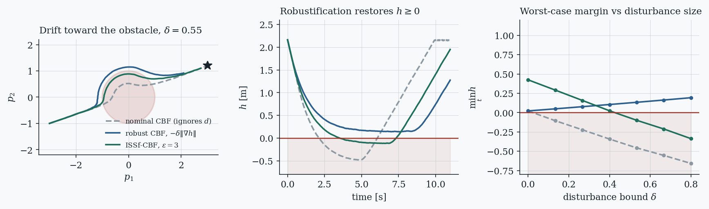
5.2 Input limits and pointwise feasibility
Nothing guarantees that \(K_{\mathrm{cbf}}(x) \cap \mathcal{U}\) is non-empty. A CBF valid for unbounded inputs can be infeasible for the real actuator, and stacking several barriers makes conflicts likelier still: two individually satisfiable constraints may have no common solution. The standard responses are input-constrained CBFs (which build the chain so that feasibility is maintained under \(\mathcal{U}\)), backup CBFs (which define the safe set implicitly as the states from which a known backup controller can keep the system safe, computed by forward simulation), soft-min and soft-max compositions of multiple barriers, and slack relaxation with a high penalty — which converts a solver failure into a quantified, logged safety degradation. The last is not a guarantee, but on hardware it beats an exception.
5.3 Undesired equilibria and deadlock
Pointwise optimality says nothing about where the closed loop ends up. The minimum-norm safe input can cancel the goal-seeking term exactly, creating asymptotically stable equilibria on \(\partial\mathcal{C}\) — a robot that is provably safe and permanently stuck. This is not an artefact of a bad barrier: recent analysis shows the equilibria and their stability are properties of the filter geometry, largely independent of which valid CBF is used, and that CBF filters can also induce limit cycles and unbounded trajectories.
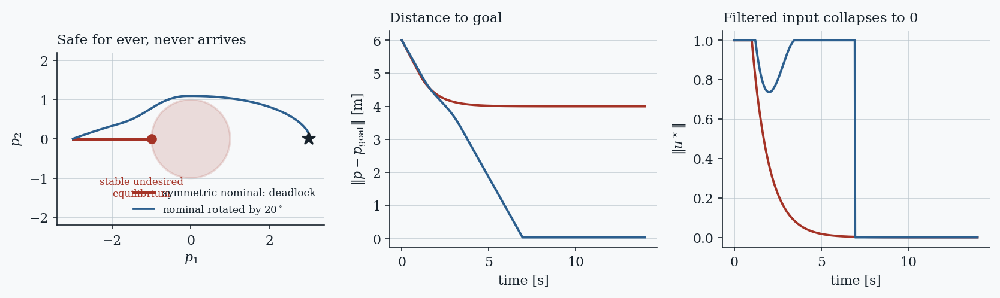
5.4 Sampled data, zero-order hold, and estimated state
The guarantee is continuous-time; the implementation samples. Between control instants the input is held, and \(h\) can dip below zero even though every QP was feasible. A margin proportional to the control period restores safety for the sampled-data loop, and self-triggered or event-triggered variants compute how long the current input may safely be held.
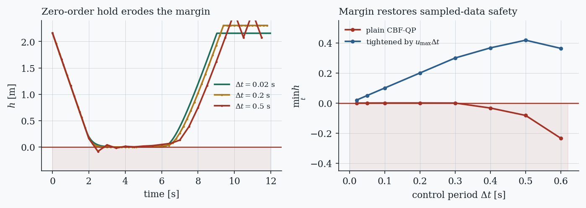
The same argument applies to the state itself. If \(h\) is evaluated at an estimate \(\hat x\) rather than \(x\) — invariably true when perception is in the loop — the condition certifies nothing about the true state. That gap is exactly what measurement-robust CBFs close, and it is important enough to deserve its own entry in the taxonomy (Section 7.7).
6. How the family is organised
There are now well over a hundred named CBF variants, and reading them as a flat list is hopeless. Almost all of them are answers to one of five questions about the basic condition \(\dot h \geq -\alpha(h)\) — what the dynamics look like, how the input reaches the barrier, what is uncertain, how many agents there are, and where \(h\) itself came from. Placing a new paper on these axes usually predicts both its content and its limitations before reading the details.
Two caveats before the catalogue. First, the axes are not independent: a learned barrier for a multi-agent system with perception in the loop inherits the difficulties of all three axes and needs the fixes from all three. Second, the names are not standardised — adaptive CBF means at least three different things in the literature (parameter adaptation in the plant model, online tuning of \(\alpha\), and time-varying safe sets), so read definitions rather than titles.
7. The variants, one axis at a time
| Variant | What it changes | Use it when | Cost |
|---|---|---|---|
| HOCBF / exponential | Chain of conditions \(\psi_i\) up to the relative degree | The input does not appear in \(\dot h\) (position constraints, most robots) | More gains to tune; certified set shrinks to \(\bigcap_i\{\psi_i\geq 0\}\) |
| Discrete-time CBF | \(h(x_{k+1}) - h(x_k) \geq -\alpha(h(x_k))\) | The controller is genuinely discrete, or inside an MPC | Condition is nonlinear in \(u\) unless the plant is affine in the step |
| Sampled-data CBF | Adds a hold margin over the control period | Always, on real hardware | Conservatism proportional to \(\Delta t\) |
| Stochastic CBF | Diffusion term via Itô; exit-probability bounds | Noise is better modelled as a process than a bound | Guarantees become probabilistic |
| Robust CBF | Subtracts \(\delta\|\nabla h\|\) or a differential-inclusion term | A hard bound on the disturbance is available | Pays worst case at all times |
| ISSf-CBF | Tempering term; invariance of a slightly enlarged set | The worst case is too expensive to pay | Quantified, not zero, degradation |
| Risk-aware / CVaR | Tail-risk constraint instead of worst case | Heavy-tailed uncertainty; a risk budget exists | Needs a distribution or samples |
| Adaptive CBF | Adapts plant parameters, \(\alpha\), or the set online | Parametric uncertainty, or fixed gains are too conservative | Guarantee holds along the adaptation law, not pointwise |
| Input-constrained CBF | Builds the chain so \(K_{\mathrm{cbf}}\cap\mathcal{U} \neq \emptyset\) | Saturating actuators with high relative degree | Construction is problem-specific |
| Backup CBF | Implicit safe set = states a backup policy can hold | No analytic CBF exists under the input limits | Forward simulation per step; sensitivity propagation |
| Graph CBF | Barrier defined on a neighbourhood, not the joint state | Many agents, local sensing, changing topology | Needs an attention/locality argument to stay valid |
| Measurement-robust CBF | Adds \(a(y) + b(y)\|u\|\) for state-estimate error | \(h\) is evaluated on perception output | Condition becomes a second-order cone constraint |
| Predictive CBF | Looks ahead over a horizon before committing | Myopic filtering causes deadlock or infeasibility | Solves an optimisation, not a QP |
| Neural CBF | \(h_\theta\) is a network trained from data | The safe set is high-dimensional or defined by data | Needs verification to mean anything |
7.1 Dynamics: discrete-time, sampled-data, stochastic
The discrete-time CBF replaces the derivative with a difference, \(h(x_{k+1}) - h(x_k) \geq -\alpha(h(x_k))\), which is natural when the controller is a digital loop or the barrier sits inside an MPC — the combination of discrete-time CBFs with MPC is now a standard safety-critical MPC formulation. High-order and adaptive discrete-time versions extend this to high relative degree and to time-varying penalty functions that recover feasibility. A subtlety: the discrete condition is generally nonlinear in \(u\), so the tidy QP structure is not automatic. Truncated-Taylor and predictive constructions have been proposed to get high-order behaviour with a single class-\(\mathcal{K}\) function instead of a tuned chain.
Stochastic CBFs treat noise as a diffusion and produce bounds on the probability of leaving the safe set over a horizon, rather than deterministic invariance. If the physical noise is genuinely unbounded — most sensor noise is — this is the honest formulation, and its guarantee is correspondingly probabilistic.
7.2 Input channel: high-order, input-constrained, backup, non-smooth
Section 4 covered HOCBFs. The other three all exist because of actuator limits. Input-constrained CBFs generalise the HOCBF chain so that feasibility under \(\mathcal{U}\) is maintained by construction, including non-uniform relative degrees across input channels. Backup CBFs abandon the analytic route: define the safe set implicitly as the states from which a simple, known backup controller (full braking, hover, sit) keeps the system safe, and evaluate it by integrating the backup trajectory forward at every step — expensive but remarkably effective, and now with closed-form solutions for the bounded-input case. Soft-min and soft-max compositions collapse many constraints into one smooth barrier (the log-sum-exp aggregation in cbf_core.soft_min), which is also what makes closed-form filtering possible for multi-constraint problems.
7.3 Uncertainty: robust, ISSf, risk-aware
Covered in Section 5.1. The distinction worth carrying: robust and ISSf formulations need a bound; stochastic and risk-aware formulations need a distribution or samples. Choosing between them is a modelling decision about what you actually know, and Bayesian and CVaR variants for discrete-time systems with learned dynamics are an active 2026 topic.
7.4 Adaptation and parameter tuning
Adaptive CBFs address parametric uncertainty in \(f, g\) by adapting the parameter estimate along with the barrier condition, so the guarantee holds along the adaptation law. Separately — and confusingly under the same name — a large body of work adapts the class-\(\mathcal{K}\) function or the CBF parameters online to reduce conservatism: optimal-decay CBFs solve for the decay rate inside the QP with guaranteed pointwise feasibility; penalty and rate-tunable formulations modulate how hard each constraint pushes; learning-based schemes predict good parameters from the local environment with uncertainty-aware verification of the candidate values before use.
7.5 Multi-agent and graph CBFs
For \(N\) agents, writing a single barrier on the joint state scales badly and must be redesigned whenever \(N\) changes. Pairwise barriers with a responsibility split are the classical decentralised answer, and they work — but they are myopic, and the induced local policy jams in congested configurations (Figure 9).
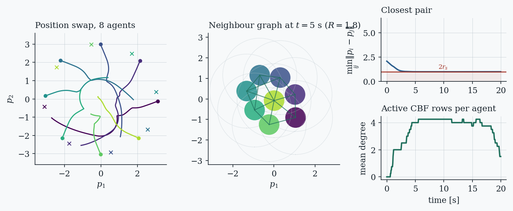
The graph CBF (GCBF) formalises the locality that pairwise schemes use implicitly: the barrier is a function of an agent’s neighbourhood \(\bar x_{\mathcal{N}_i}\) rather than the joint state, with the requirement that nodes outside the sensing radius \(R\) do not affect its value — a condition that keeps \(h\) continuously differentiable even though the index set \(\mathcal{N}_i(t)\) jumps as agents enter and leave the radius. That gives a single certificate valid for an arbitrary number of agents. GCBF+ parameterises it with a graph neural network together with a distributed policy, consumes LiDAR point clouds instead of ground-truth states, and was demonstrated on drone swarms and in simulations scaling to hundreds of agents, outperforming both hand-designed CBF baselines and leading multi-agent RL. Mean-field CBFs push the same idea to the swarm limit, deriving constraints on a distribution rather than on individuals.
7.6 Adversarial and non-cooperative settings
The pairwise construction above assumes every agent does its share. If some do not — faulty, selfish, or adversarial — the split is invalid. Adversarially robust CBFs assume a bounded number of misbehaving neighbours and keep the guarantee against their worst-case inputs; trust-based rate-tunable variants modulate each constraint by an online estimate of how cooperative the neighbour appears.
7.7 Measurement-robust CBFs and perception in the loop
When \(h\) is evaluated on a state estimate \(\hat x\) produced by a learned perception module, the classical condition certifies nothing: the error \(\|x - \hat x\|\) enters both \(\nabla h\) and \(\alpha(h)\). The measurement-robust CBF of Dean, Taylor, Cosner, Recht and Ames handles this by tightening the condition with terms that grow with the estimation error bound \(\varepsilon(y)\):
\[\sup_{u \in \mathcal{U}} \Big[ L_f h(\hat x) + L_g h(\hat x)\,u - \big( a(y) + b(y)\,\|u\|_2 \big) \Big] \;\geq\; -\alpha\big(h(\hat x)\big),\]
where \(a\) absorbs the Lipschitz error in the drift and barrier terms and \(b\) scales with the error in \(L_g h\). Two features matter. The \(\|u\|\) term makes the constraint a second-order cone rather than a half-space, so the filter becomes an SOCP; and the original CBF condition is recovered exactly when the measurement is perfect. Their work also runs the argument backwards: the MR-CBF condition tells you how accurate a learned perception module has to be, and therefore how to sample training data for it. The follow-up unifies MR-CBFs with backup sets and demonstrates the result on a Segway using onboard stereo vision, where the plain CBF loses safety and the measurement-robust version keeps it.
This area has moved quickly because perception-based autonomy demands it: recent work covers CBFs over neural radiance fields, safety filters conditioned on language, adaptive handling of out-of-distribution measurements, and attention-derived obstacle sets read directly out of a robot policy’s own internals (Section 8.6).
7.8 Beyond state constraints: time, logic, and prediction
Safety is not always a static set. Fixed-time and prescribed-time barriers encode when something must happen, not only what must be avoided; signal-temporal-logic CBFs compile temporal specifications into time-varying barriers; and predictive CBFs look ahead over a horizon before committing to an input, which repairs the myopia responsible for much deadlock and infeasibility. The bridge to model-predictive control is by now explicit in both directions: predictive safety filters can be read as CBFs, and discrete-time CBFs sit naturally inside MPC.
8. CBFs with reinforcement learning and data-driven control
Two distinct problems get mixed together under this heading, and separating them is the single most useful move in reading this literature:
- Learning is the problem. An RL policy explores, and exploration on hardware breaks things. A CBF is used as a shield so that learning is survivable.
- Learning is the solution. Designing \(h\) (or the model it needs) by hand is the bottleneck. Data is used to synthesise the barrier itself.
The first uses a CBF to protect learning; the second uses learning to obtain a CBF. Most practical systems now need both, which is why surveys of this area cover them together.
8.1 Learning the safe set
The oldest data-driven route is supervised: sample states, label them safe or unsafe, and fit a smooth classifier whose decision function serves as a candidate barrier. With an RBF-kernel SVM the gradient is available in closed form, which is all the filter needs, and the learned zero level set recovers non-convex geometry that would be tedious to write down analytically.
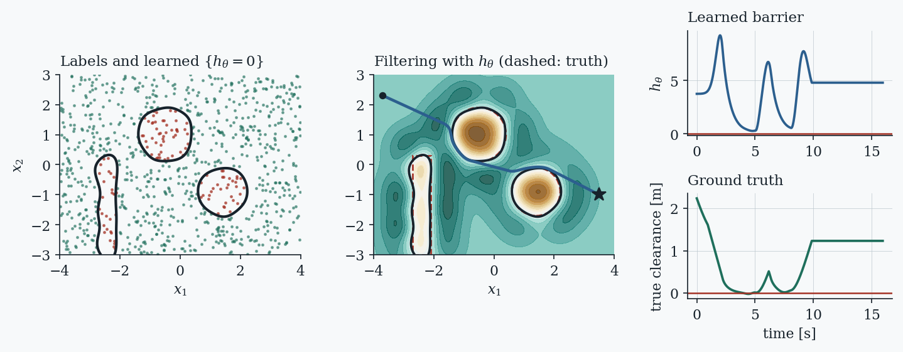
THE CENTRAL CAVEAT
A function whose zero level set matches the obstacle geometry is a learned safe set, not a control barrier function. The CBF property is the descent condition — that some admissible input can always arrest the decay of \(h\) — and fitting labels never checks it. This is why neural-CBF work is inseparable from verification (Section 8.5), and why a learned \(h\) that performs beautifully in simulation can fail on a system with tighter actuator limits than the training environment had.
8.2 Learning the dynamics the barrier needs
The complementary route keeps a hand-designed \(h\) and learns the model entering \(L_f h\) and \(L_g h\). Gaussian processes are the classical choice because they come with posterior uncertainty that can be folded straight into a robust condition: use the posterior mean in the constraint and subtract a multiple of the posterior standard deviation as a margin. As data accumulates the margin shrinks and the conservatism with it — the mechanism behind GP-based safe control and the model-learning half of RL-CBF. Variants include Gaussian CBFs that build \(h\) itself non-parametrically from safety samples, Koopman-operator constructions that lift nonlinear dynamics into a space where the CBF constraint is affine, disturbance-observer-based robust CBFs that estimate the uncertainty pointwise rather than bounding it, and input-output data-driven CBFs built from a behavioural representation without identifying a state-space model at all.
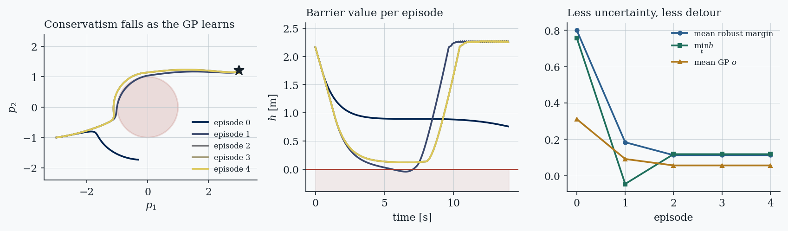
8.3 Filtering reinforcement learning
The oldest and still most common pattern: let the RL policy propose, and pass the proposal through a CBF-QP before it reaches the actuator. RL-CBF (Cheng, Orosz, Murray and Burdick) combined a model-free policy, a GP model of the unknown dynamics, and a CBF controller to maintain safety with high probability throughout learning while also guiding exploration by restricting the set of explorable policies; robust-CBF variants model the disturbance as a differential inclusion and place the resulting filter inside a SAC loop. The measured benefit is twofold and both halves matter: fewer violations, and better sample efficiency, because the agent stops wasting rollouts on regions it should never have visited.
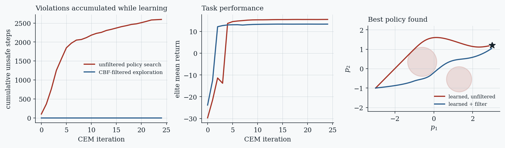
8.4 Making the filter part of the policy
Pattern A below has a structural defect: the policy never learns that the filter exists. It keeps proposing inputs that get corrected, the critic is trained on actions the environment never executed, and the result is a policy that is safe only because something downstream cleans up after it. Three responses have emerged, and they are complementary rather than competing.
Differentiable CBF layers. BarrierNet embeds a differentiable higher-order CBF-QP as a trainable layer, so gradients flow through the safety projection and the class-\(\mathcal{K}\) parameters themselves become learnable — which directly attacks the conservativeness of fixed CBF parameters while keeping the guarantee. Related designs use the gauge map or a closed-form log-sum-exp solution to avoid differentiating through a QP solver at every training step, which is the main computational obstacle for multi-constraint problems.
Enforcing the CBF in training. The more recent shift is to apply the filter during training and then remove it: CBF-RL enforces barrier constraints in the training loop so the policy internalises them, biasing both actions and rewards toward safety, and reports deployment without any runtime filter — validated on a Unitree G1 humanoid avoiding obstacles and climbing stairs. This inverts the usual division of labour: the CBF becomes a training-time teacher rather than a runtime guard.
Barrier-shaped objectives. Penalising violation of the CBF inequality in the reward, or learning a neural barrier certificate jointly with the policy in a model-free loop, is cheaper and differentiable but provides no guarantee on its own. Treat it as a way to reduce how often a hard mechanism must intervene.
8.5 Neural CBFs and why verification is the whole game
Neural certificates scale to state dimensions where sum-of-squares programming and gridded Hamilton-Jacobi methods stop, and the training recipe is now standard: sample safe states, unsafe states, and interior states, then penalise sign violations on the first two and violation of the descent condition on the third. The supremum over a norm-bounded input set has a closed form, \(\sup_{\|u\| \leq u_{\max}} L_g h\,u = u_{\max}\|L_g h\|\), so no inner optimisation is needed.
Low training loss, however, is evidence about the sampled points and nothing more. The descent condition must hold on an uncountable set, so the field has converged on verification as an integral part of synthesis rather than an afterthought:
- Exact methods for ReLU barriers via MILP/SMT encodings — complete, with exponential worst-case cost.
- Bound propagation (the CROWN family) over the network and its Jacobian, including symbolic derivative bounds; sound and incomplete, but scalable, and the subject of continued work on scaling neural-CBF verification through linear bound propagation.
- Verification in the loop, where branch-and-bound runs during training and counterexamples are fed back — the CEGIS pattern, which produces a network and its certificate together.
- Stochastic and data-driven certification, giving probabilistic guarantees from finite samples for systems where a deterministic bound is unavailable.
8.6 Filtering generative and foundation-model policies
The newest and fastest-moving application is safety for large learned policies — diffusion planners and vision-language-action models — where the policy is far too complex to verify and a filter is the only practical mechanism. Work through 2025 and 2026 spans post-hoc projection of generated trajectories, barrier constraints embedded inside the denoising or flow-matching process so the whole generated action chunk is safe rather than just the next action, log-sum-exp aggregate barriers to keep the overhead of many constraints manageable, plug-and-play geometric safety layers, semantic shielding, language-conditioned safety filters, adaptive handling of out-of-distribution measurements, and training-free schemes that read the obstacle set out of a policy’s own attention maps at control rate. Benchmarks have appeared alongside them.
Read these as engineering rather than as theory: the barrier usually lives in end-effector or Cartesian space with a simple geometric \(h\), the model providing \(L_gh\) is a kinematic approximation, and the guarantee is conditional on perception. That is still a decisive improvement over an unguarded policy, and it is currently where most of the applied activity is.
9. A checklist for deployment
Collecting the failure modes from Sections 5 and 8 into the order in which they tend to bite:
- Check the relative degree first. If \(L_gh \equiv 0\) the filter is decoration. Verify numerically that \(\|L_gh\|\) is bounded away from zero on the operating set, or build the HOCBF chain.
- Verify the initial state against every level of the chain. \(h(x_0) \geq 0\) is not enough for an HOCBF; all \(\psi_i(x_0) \geq 0\) are needed.
- Put the real actuator limits in the QP, and test feasibility across the workspace offline rather than discovering infeasibility in flight. If constraints can conflict, decide in advance between an input-constrained construction, a backup set, soft-min aggregation, or slack with a logged penalty.
- Add a sampled-data margin sized for the real control period, and confirm it with a simulation whose integration step is far smaller than the control step (Figure 8 is exactly this test).
- Account for state-estimate error if \(h\) reads perception: an MR-CBF term, and an SOCP solver to go with it.
- Sweep the class-\(\mathcal{K}\) function and plot \(\min_t h\) against intervention magnitude. Conservatism is a design choice, so choose it deliberately.
- Hunt for deadlock in the intended workspace, including symmetric configurations, before trusting the loop. If found, fix the nominal controller, not the barrier.
- Log the intervention rate in production. A filter that never activates is untested; one that activates constantly means the nominal controller and the barrier disagree about the task, and the safety margin is being spent continuously rather than held in reserve.
- For anything learned, verify the descent condition, not just the sign of \(h\) on a test set — and re-verify after every retraining and every change to the actuator limits.
10. References
Foundations and surveys
- A. D. Ames, X. Xu, J. W. Grizzle, P. Tabuada. Control barrier function based quadratic programs for safety critical systems. IEEE Trans. Automatic Control 62(8):3861–3876, 2017. — The reference statement of the theorem in Section 2.
- A. D. Ames, J. W. Grizzle, P. Tabuada. Control barrier function based quadratic programs with application to adaptive cruise control. IEEE CDC, 2014. — The ACC benchmark reproduced in Figure 4.
- A. D. Ames, S. Coogan, M. Egerstedt, G. Notomista, K. Sreenath, P. Tabuada. Control barrier functions: theory and applications. European Control Conference, 3420–3431, 2019.
- K.-C. Hsu, H. Hu, J. F. Fisac. The safety filter: a unified view of safety-critical control in autonomous systems. Annual Review of Control, Robotics, and Autonomous Systems 7:47–72, 2024. — Places CBFs, HJ reachability and predictive filters in one framework.
- K. Garg, J. Usevitch, J. Breeden, M. Black, D. Agrawal, H. Parwana, D. Panagou. Advances in the theory of control barrier functions: addressing practical challenges in safe control synthesis for autonomous and robotic systems. Annual Reviews in Control, 2024. arXiv:2312.16719.
- S. Zhao, Z. Yan, T. Huang, S. Wen. A comprehensive review on control barrier functions: uncertainty handling, design optimization, and feasibility analysis. IEEE Trans. Cybernetics 56(4):2061–2069, 2026. doi:10.1109/TCYB.2025.3633800.
- Safe control against uncertainty: a comprehensive review of control barrier function strategies. IEEE, 2025 — IEEE Xplore document 10836828. Classifies uncertainty by learnability and transferability and surveys the techniques attached to each class.
- P. Panja, M. Rayguru, S. Baidya. Survey paper on control barrier functions. arXiv:2408.13271, 2024.
Relative degree, discrete time, feasibility
- W. Xiao, C. Belta. High-order control barrier functions. IEEE Trans. Automatic Control 67(7):3655–3662, 2022.
- Q. Nguyen, K. Sreenath. Exponential control barrier functions for enforcing high relative-degree safety-critical constraints. ACC, 2016.
- Y. Xiong, D.-H. Zhai, M. Tavakoli, Y. Xia. Discrete-time control barrier function: high-order case and adaptive case. IEEE Trans. Cybernetics, 2022.
- J. Zeng, B. Zhang, K. Sreenath. Safety-critical model predictive control with discrete-time control barrier function. ACC, 2021.
- D. R. Agrawal, D. Panagou. Safe control synthesis via input constrained control barrier functions. IEEE CDC, 2021.
- T. Gurriet, A. Singletary, et al. Towards a framework for realizable safety critical control through active set invariance / backup-set CBFs. ICCPS, 2018; and closed-form backup CBF solutions, arXiv:2510.05436, 2025.
- P. Rabiee, J. B. Hoagg. Soft-minimum and soft-maximum barrier functions for safety with actuation constraints. Automatica 171:111921, 2025.
- X. Tan, D. V. Dimarogonas. On the undesired equilibria induced by control barrier function based quadratic programs. Automatica 159:111359, 2024.
- P. Mestres, Y. Chen, E. Dall’Anese, J. Cortés. Control barrier function-based safety filters: characterization of undesired equilibria, unbounded trajectories, and limit cycles. Journal of Nonlinear Science 36:41, 2026. doi:10.1007/s00332-026-10255-x.
- M. F. Reis, J. P. Carvalho, A. P. Aguiar. A unified stability analysis of safety-critical control using multiple control barrier functions. arXiv:2503.15823, 2025.
- Explicit control barrier function-based safety filters and their resource-aware computation. arXiv:2512.10118, 2025/26.
Uncertainty, robustness, perception
- X. Xu, P. Tabuada, J. W. Grizzle, A. D. Ames. Robustness of control barrier functions for safety critical control. IFAC-PapersOnLine 48(27):54–61, 2015.
- S. Kolathaya, A. D. Ames. Input-to-state safety with control barrier functions. IEEE Control Systems Letters 3(1):108–113, 2019.
- A. Alan, A. J. Taylor, C. R. He, A. D. Ames, G. Orosz. Control barrier functions and input-to-state safety with application to automated vehicles. IEEE Trans. Control Systems Technology 31(6):2744–2759, 2023.
- S. Dean, A. J. Taylor, R. K. Cosner, B. Recht, A. D. Ames. Guaranteeing safety of learned perception modules via measurement-robust control barrier functions. CoRL, PMLR 155:654–670, 2021. arXiv:2010.16001.
- R. K. Cosner, A. W. Singletary, A. J. Taylor, T. G. Molnar, K. L. Bouman, A. D. Ames. Measurement-robust control barrier functions: certainty in safety with uncertainty in state. IROS, 2021. arXiv:2104.14030.
- M. Black, G. Fainekos, B. Hoxha, D. Prokhorov, D. Panagou. Safety under uncertainty: tight bounds with risk-aware control barrier functions. ICRA, 12686–12692, 2023.
- A. Clark. Control barrier functions for complete and incomplete information stochastic systems. ACC, 2019; and Verification and synthesis of control barrier functions, CDC, 2021.
- W. Xiao, C. Belta, C. G. Cassandras. Adaptive control barrier functions. IEEE Trans. Automatic Control 67(5):2267–2281, 2022.
- K. P. Wabersich, M. N. Zeilinger. Predictive control barrier functions: enhanced safety mechanisms for learning-based control. arXiv:2105.10241; and A predictive safety filter for learning-based control of constrained nonlinear dynamical systems, Automatica 129:109597, 2021.
Multi-agent and graph CBFs
- L. Wang, A. D. Ames, M. Egerstedt. Safety barrier certificates for collisions-free multirobot systems. IEEE Trans. Robotics 33(3):661–674, 2017.
- S. Zhang, O. So, K. Garg, C. Fan. GCBF+: a neural graph control barrier function framework for distributed safe multiagent control. IEEE Trans. Robotics 41:1533–1552, 2025. doi:10.1109/TRO.2025.3530348. Code: github.com/MIT-REALM/gcbfplus.
- Z. Qin, K. Zhang, Y. Chen, J. Chen, C. Fan. Learning safe multi-agent control with decentralized neural barrier certificates. ICLR, 2021.
- J. Usevitch, D. Panagou. Adversarial resilience for sampled-data systems using control barrier function methods. ACC, 2021.
- H. Parwana, A. Mustafa, D. Panagou. Trust-based rate-tunable control barrier functions for non-cooperative multi-agent systems. CDC, 2022.
Learning, RL, and verification
- R. Cheng, G. Orosz, R. M. Murray, J. W. Burdick. End-to-end safe reinforcement learning through barrier functions for safety-critical continuous control tasks. AAAI 33:3387–3395, 2019. arXiv:1903.08792.
- Y. Emam, G. Notomista, P. Glotfelter, Z. Kira, M. Egerstedt. Safe reinforcement learning using robust control barrier functions. arXiv:2110.05415, 2022.
- M. Guerrier et al. Learning control barrier functions and their application in reinforcement learning: a survey. arXiv:2404.16879, 2024.
- C. Dawson, S. Gao, C. Fan. Safe control with learned certificates: a survey of neural Lyapunov, barrier, and contraction methods for robotics and control. IEEE Trans. Robotics 39(3):1749–1767, 2023.
- W. Xiao, T.-H. Wang, R. Hasani, M. Chahine, A. Amini, X. Li, D. Rus. BarrierNet: differentiable control barrier functions for learning of safe robot control. IEEE Trans. Robotics, 2023. doi:10.1109/TRO.2023.3249564. Earlier version arXiv:2111.11277.
- L. Yang, B. Werner, M. de Sa, A. D. Ames. CBF-RL: safety filtering reinforcement learning in training with control barrier functions. arXiv:2510.14959, 2025 (rev. 2026). Humanoid hardware results on the Unitree G1.
- Y. Yang, Y. Jiang, Y. Liu, J. Chen, S. E. Li. Model-free safe reinforcement learning through neural barrier certificate. IEEE Robotics and Automation Letters 8(3):1295–1302, 2023.
- M. Srinivasan, A. Dabholkar, S. Coogan, P. A. Vela. Synthesis of control barrier functions using a supervised machine learning approach. IROS, 7139–7145, 2020. — The labelled-sample route used in Figure 10.
- P. Jagtap, G. J. Pappas, M. Zamani. Control barrier functions for unknown nonlinear systems using Gaussian processes. IEEE CDC, 2020.
- V. Dhiman, M. J. Khojasteh, M. Franceschetti, N. Atanasov. Control barriers in Bayesian learning of system dynamics. IEEE Trans. Automatic Control, 2023; and Gaussian control barrier functions: a non-parametric paradigm to safety, arXiv:2203.15474.
- C. Folkestad, Y. Chen, A. D. Ames, J. W. Burdick. Data-driven safety-critical control: synthesizing control barrier functions with Koopman operators. IEEE Control Systems Letters 5(6):2012–2017, 2021.
- H. Zhang, J. Wu, Y. Vorobeychik, A. Clark. Exact verification of ReLU neural control barrier functions. NeurIPS 36:5685–5705, 2023.
- H. Hu, Y. Yang, T. Wei, C. Liu. Verification of neural control barrier functions with symbolic derivative bounds propagation. CoRL, PMLR 270:1797–1814, 2024.
- X. Wang, L. Knoedler, F. B. Mathiesen, J. Alonso-Mora. Simultaneous synthesis and verification of neural control barrier functions through branch-and-bound verification-in-the-loop training. ECC, 571–578, 2024.
- A. Abate, D. Ahmed, A. Edwards, M. Giacobbe, A. Peruffo. FOSSIL: a software tool for the formal synthesis of Lyapunov functions and barrier certificates using neural networks. HSCC, 2021.
- A. Salamati, A. Lavaei, S. Soudjani, M. Zamani. Data-driven verification and synthesis of stochastic systems via barrier certificates. Automatica 159:111323, 2024.
- O. So, Z. Serlin, M. Mann, J. Gonzales, K. Rutledge, N. Roy, C. Fan. How to train your neural control barrier function: learning safety filters for complex input-constrained systems. ICRA, 2024.
Generative and foundation-model policies (2025–2026)
- W. Xiao, T.-H. Wang, C. Gan, D. Rus. SafeDiffuser: safe planning with diffusion probabilistic models. 2023/24 — barrier constraints inside the denoising process.
- K. Mizuta et al. CoBL-Diffusion — CBF-constrained diffusion planning.
- S. Hu, Z. Liu, S. Liu, J. Cen, Z. Meng, X. He. VLSA: vision-language-action models with a plug-and-play safety constraint layer. arXiv:2512.11891, 2025.
- Z. Feng, H. Zhang, S. Bansal. From words to safety: language-conditioned safety filtering for robot navigation. arXiv:2511.05889, 2025.
- ATOM-CBF: adaptive safe perception-based control under out-of-distribution measurements. arXiv:2511.08741, 2025.
- Your model already knows: attention-guided safety filter for vision-language-action models. arXiv:2606.09749, 2026.
- Safe vision-language-action models via barrier-enhanced flow matching. arXiv:2607.29569, 2026 — log-sum-exp aggregate barriers over action chunks.
- LIBERO-Safety: a benchmark for physical and semantic safety in vision-language-action models. arXiv:2606.23686, 2026.
Bibliographic note: entries were checked against publisher or arXiv records where possible. A few 2026 preprints are cited by arXiv identifier because no journal version exists yet; for those, check for an updated version before citing them in your own work.